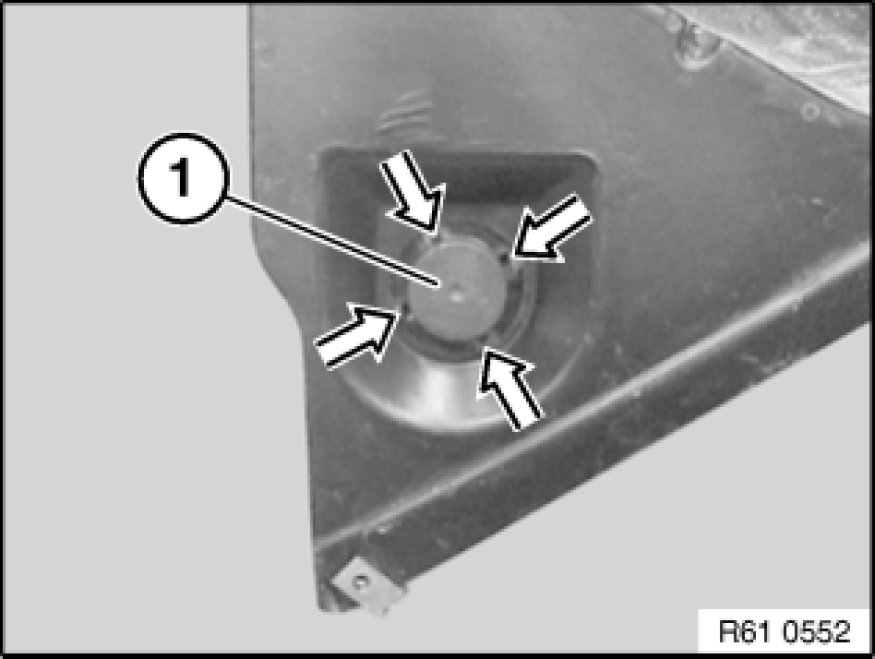

Washer Fluid Heater: Service and Repair
61 31 440 - Removing and installing/replacing temperature switch for heated windshield spray jets

Necessary preliminary tasks:
- E52: Detach front right wheel arch cover (front section)
- E83: Remove front underbody protection Removing and Installing/Replacing Front Underbody Protection

If necessary, unlock associated plug connection and disconnect.
Unclip temperature switch for heated windshield spray jets (1) in direction of arrow and remove.